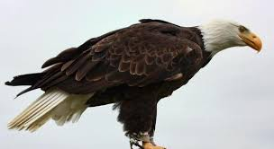
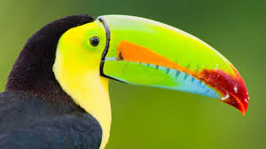
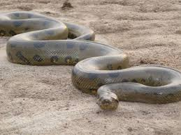
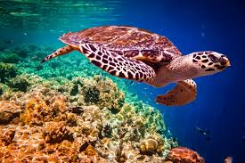
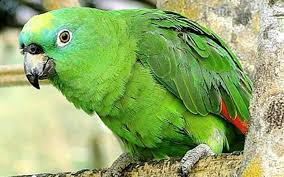
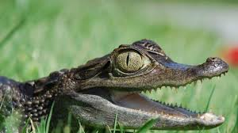

MENU PRINCIPAL
Integrantes
Blog
Aves
Reptiles
Mamiferos
Anfibios
Peces

Aguila
Cocodrilo
Leon
Salamandra
Pez mandarin
Aguila chrysaetos
Crocodylidae
Panthera leo
Caudata
Synchiropus splendidus


Tucan
Anaconda
Elefante
Sapo comun
Pez león
Ramphastidae
Eunectes murinus
Elephantidae
Bufo bufo
Pterois antennata

Colibri
Tortuga carey
Jirafa
Sapo Gigante
Pez payaso
Trochilidae
Eretmochelys imbricata
Giraffa camelopardalis
Rhinella marina
Pez payaso

Loro
Lagarto
Delfin
Rana Venenosa
Pez loro
Psittacoidea
Lacertilia
Delphinidae
Dendrobatidae
Scaridae

Cardenal
Caiman
Caballo
ajolote
Pez idolo moro
Cardinalis cardinalis
Caiman crocodilus
Equus caballus
Ambystoma mexicanum
Zanclus cornutus